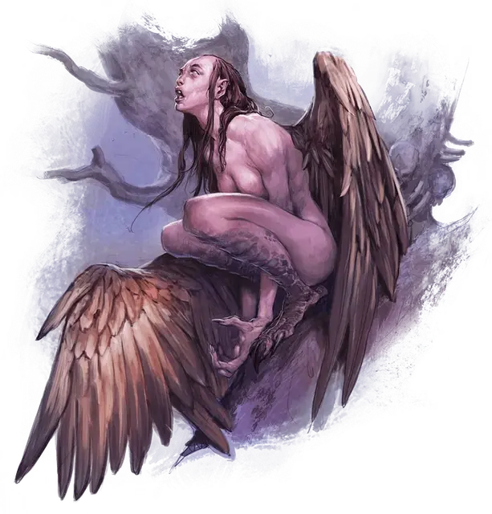

Гарпия
Harpy
Средний Монстр, хаотично-злой

Класс Доспеха 11
Хиты 38 (7к8 + 7)
Скорость 20 футов, летая 40 футов
| мод | спас | ||
|---|---|---|---|
| СИЛ | 12 | +1 | +1 |
| ЛОВ | 13 | +1 | +1 |
| ТЕЛ | 12 | +1 | +1 |
| мод | спас | ||
|---|---|---|---|
| ИНТ | 7 | −2 | −2 |
| МДР | 10 | +0 | +0 |
| ХАР | 13 | +1 | +1 |
Чувства пассивное Восприятие 10
Языки Общий
Опасность 1 (200 опыта)
Бонус мастерства +2
Среда обитания Горы, Лес, Побережье, Холмы
Действия
Мультиатака. Гарпия совершает две атаки: одну когтями, и одну дубиной.
Когти. Рукопашная атака оружием: +3 к попаданию, досягаемость 5 футов, одна цель. Попадание: 6 (2к4 + 1) рубящего урона.
Дубина. Рукопашная атака оружием: +3 к попаданию, досягаемость 5 футов, одна цель. Попадание: 3 (1к4 + 1) дробящего урона.
Манящая песня. Гарпия начинает петь магическую мелодию. Все гуманоиды и великаны в пределах 300 футов от гарпии, слышащие песню, должны преуспеть в спасброске Мудрости Сл 11, иначе они станут очарованными до окончания песни. Гарпия может продолжать петь в следующих раундах бонусным действием. Она может прекратить петь в любое время. Песня оканчивается, если гарпия становится недееспособной.
Будучи очарованной гарпией, цель недееспособна и игнорирует песни других гарпий. Если очарованная цель находится более чем в 5 футах от гарпии, цель должна в свой ход переместиться к гарпии кратчайшим маршрутом. Она не избегает провоцированных атак, но перед вхождением в опасную местность, такую как лава или яма, а также при получении урона из любого источника кроме этой гарпии цель может повторять спасбросок. Существо также может повторять спасбросок в конце каждого своего хода. Если спасбросок существа был успешным, эффект на нем прекращается.
Цель, прошедшая спасбросок, получает иммунитет к песне этой гарпии на следующие 24 часа.
Описание
Находя удовольствие в страданиях и смерти, гарпии, обладающие садистскими вкусами, постоянно ищут себе новые жертвы. Их сладкие песни привели к смерти бесчисленное множество искателей приключений, приманивая их гарпиям на съедение.
Гарпия обладает телом, ногами и крыльями стервятника и туловищем, руками и головой человека. Их глаза отражают абсолютное зло их душ, а острые когти гарпий и костяные дубинки делают их опасными в бою.
Божественное проклятье. В давние времена блуждающая по лесу эльфийка услышала пение птиц, настолько чистое и прекрасное, что была тронута до слез. Следуя этой музыке, она вышла на поляну, где стоял красивый юный эльф, который тоже остановился, чтобы послушать песню птицы. Это был Фенмарел Местарин, эльфийский бог-затворник. Его божественный облик похитил её сердце, но эльф сбежал, исчезнув среди деревьев, словно его там никогда и не было.
Эльфийка обыскала лес и звала незнакомца, но она не нашла никаких следов его присутствия. Доведенная до отчаяния свой страстью, она умоляла богов о помощи. Аэрдри Фаэниа, эльфийская богиня неба, услышала плач эльфийки и отправилась ей на помощь. Она явилась в образе птицы, чья песня очаровала бога-затворника, и научила эльфийку этой песне красоты и обольщения.
Когда её пению не удалось привлечь Фенмарела Местарина к себе, эльфийка прокляла богов, вызвав ужасающую силу, и превратилась в первую гарпию. Магия наложенного проклятья изменила дух эльфийки, также как и её тело, превратив её желание любви в жажду плоти, но её красивая песня продолжает привлекать жертв в её смертельные объятия.
Песнь гарпии. Услышать песнь гарпии это услышать музыку красивее, чем что-либо в этом мире. Путешественник, который поддастся чарующему эффекту этого пения, вынужден слепо двигаться к его источнику. Гарпия очаровывает жертв, прежде чем атакует, но иногда использует свою песню более эффективно, заманивая добычу на утесы, в болота, зыбучие пески или в смертельно опасные ямы. Существа, попавшие в ловушку или потерявшие сознание, становятся легкой мишенью для гнева гарпии.
Садисты и трусы. Гарпии устраивают логово у мрачных прибрежных скал и в других местах, опасных для нелетающих существ. Гарпии не ведут честных битв, и они никогда не нападают, если не обладают явным преимуществом. Если бой оборачивается не в пользу гарпий, им не хватает хитрости, чтобы менять тактику, и потому они скорее сбегут и останутся голодными, чем будут рисковать в прямом бою.
Во время нападения гарпии играют со своей едой, восторгаясь «музыкой» криков своих жертв. Гарпия не торопится расчленять беспомощного врага, и может днями пытать жертву, пока не наступит её конец.
Жуткие коллекционеры. Гарпии забирают блестящие побрякушки, ценности и другие трофеи со своих жертв, иногда сражаясь друг с другом за право претендовать на отборную добычу. Если ценности не найдены, гарпия забирает волосы, кости или части тела жертвы, чтобы вплести их в свое гнездо. Логово гарпии обычно сокрыто в отдаленных руинах, и там искатели приключений могут обнаружить ценные сокровища и магию, спрятанные под мерзкими кучами отходов.